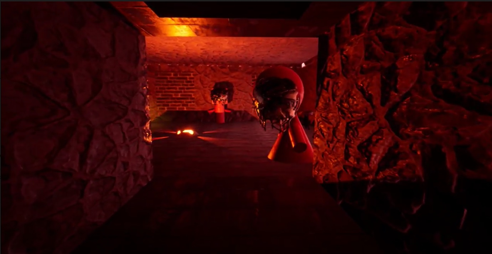

Christina Papadodimitraki
Applied Mathematician with orientation towards Programming
Featured Projects
Here are listed all the mini video games I've created in Unreal Engine. More information can be found at Unreal Games Portofolio.
Building Escape
Mini video game made with Unreal Engine 4. The player has to escape from each room and finally manage to get out from the building.
View project / case studyKill The Minotaur
Mini video game made with Unreal Engine 4. The player has to find Minotaur and kill him.
View project / case studyWork Experience
Here you can see all the job positions I had since I started University.
Clerk to a Wine Shop/Chemistry Lab
Papadodimitraki's A.E.( Family company )
2012 - 2019
I was responsible for the customer service and the cashier’s desk. Also, during the summer period I was responsible for creating a data base with all the wine must chemical analyses that were done.
Skills that the job required:
- Demanding rganization skills.
- Resposibility
- Had to be trustworthy.
- Kind and pleasing personallity.
Child Camp Team Leader
Thoxastaki's Summer Camp
July 2015
I was responsible for the customer service and the cashier’s desk. Also, during the summer period I was responsible for creating a data base with all the wine must chemical analyses that were done.
Skills that the job required:
- Demanding rganization skills.
- Resposibility
- Had to be trustworthy.
- Kind and pleasing personallity.
Education
Applied Mathematics-Univercity of Crete
2012-2021
My studies invlolved lots of mathematics and quite some programming.